Un lugar para encontrarse
Montecasino nació de una visión sencilla pero profunda: crear un lugar donde las personas pudieran desconectarse del ritmo acelerado de la ciudad y reconectarse con lo esencial — la buena comida, la naturaleza y la compañía de quienes más importan.
Ubicado a tan solo 34 kilómetros de la Ciudad de Guatemala, en el camino hacia la hermosa Antigua, Montecasino se convirtió en ese paréntesis necesario entre el caos y la calma.
Los jardines
El corazón de Montecasino son sus jardines. Diseñados para invitar a respirar profundo, a caminar sin prisa y a dejar que el verde lo envuelva todo. Cada rincón fue pensado para que la naturaleza sea protagonista.
Aquí, entre palmeras, flores tropicales y el sonido del viento entre los árboles, descubrimos que la hospitalidad más auténtica se vive al aire libre.
La cocina
Nuestro restaurante es una extensión de esa misma filosofía: ingredientes frescos, recetas con alma y un equipo apasionado que entiende que cocinar es también un acto de cariño.
La carta fusiona la tradición italiana con el sabor local guatemalteco. Desde un carpaccio de lomito hasta unos huevos benedictinos al desayuno, cada platillo cuenta una historia.
El espacio
El restaurante fue diseñado para sentirse como una extensión de la casa — cálido, luminoso, con materiales naturales y una arquitectura que dialoga con el entorno.
Tanto si buscas un desayuno en calma un fin de semana, una comida de negocios o una cena especial, Montecasino tiene el espacio y el ambiente que estás buscando.
Hacer una reservaciónLo que nos define

Hospitalidad
Recibir a cada persona como si fuera la primera vez y como si fuera la última.
Autenticidad
Ingredientes reales, recetas con historia y un equipo que cocina con convicción.
Naturaleza
El entorno no es decoración — es parte fundamental de la experiencia Montecasino.